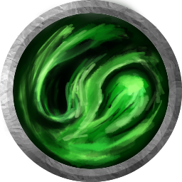

Crown of Memories
The crown of memories is a very cryptic artifact. Nobody knows where it comes from or how it was generated. It is told in myths and legends that is a power bestowed by the mother nature. It seems to carry the memories of their avatar along with the power to handle the true chaos nature comes with.Not even the greatest scholars from Eleutheria know why or how this is power is bestowed upon mortals. It is believed that the crown carries the memory of nature itself.